9 Análisis multivariante
9.1 Análisis de Componentes Principales
El análisis de componentes principales (principal component analysis) o PCA es una de las técnicas de aprendizaje no supervisado, las cuales suelen aplicarse como parte del análisis exploratorio de los datos.
A diferencia de los métodos de aprendizaje supervisado, donde contamos con un grupo de variables o características (\(X=X_1,X_2,...,X_p\)) medidas sobre un conjunto de observaciones \(n\), con la intención de obtener predicciones sobre una variable respuesta \(Y\) asociada, en los no supervisados solo contamos con un número de variables de las cuales nos interesa conocer o de las que queremos extraer información, por ejemplo, sobre la existencia de subgrupos entre las variables u observaciones.
Una de las aplicaciones de PCA es la reducción de dimensionalidad (variables), perdiendo la menor cantidad de información (varianza) posible: cuando contamos con un gran número de variables cuantitativas posiblemente correlacionadas (indicativo de existencia de información redundante), PCA permite reducirlas a un número menor de variables transformadas (componentes principales) que expliquen gran parte de la variabilidad en los datos. Cada dimensión o componente principal generada por PCA será una combinación lineal de las variables originales, y serán además independientes o no correlacionadas entre sí.
Se utiliza para enfatizar la variación y sacar a relucir patrones fuertes en un conjunto de datos. A menudo se utiliza para hacer que los datos sean fáciles de explorar y visualizar. Vamos a realizar un PCA de los resultados obtenidos en la competición de heptatlón femenino de los Juegos Olímpicos de Seúl (1988).
library(HSAUR2)## Loading required package: toolsdata("heptathlon")
head(heptathlon)## hurdles highjump shot run200m longjump javelin
## Joyner-Kersee (USA) 12.69 1.86 15.80 22.56 7.27 45.66
## John (GDR) 12.85 1.80 16.23 23.65 6.71 42.56
## Behmer (GDR) 13.20 1.83 14.20 23.10 6.68 44.54
## Sablovskaite (URS) 13.61 1.80 15.23 23.92 6.25 42.78
## Choubenkova (URS) 13.51 1.74 14.76 23.93 6.32 47.46
## Schulz (GDR) 13.75 1.83 13.50 24.65 6.33 42.82
## run800m score
## Joyner-Kersee (USA) 128.51 7291
## John (GDR) 126.12 6897
## Behmer (GDR) 124.20 6858
## Sablovskaite (URS) 132.24 6540
## Choubenkova (URS) 127.90 6540
## Schulz (GDR) 125.79 6411Recodificamos las pruebas relativas a 3 carreras hurdles, run200m y run800m, restando el valor más alto en cada carrera, cada uno de los 35 tiempos de los atletas.
heptathlon$hurdles <- max(heptathlon$hurdles) - heptathlon$hurdles
heptathlon$run200m <- max(heptathlon$run200m) - heptathlon$run200m
heptathlon$run800m <- max(heptathlon$run800m) - heptathlon$run800mDiagrama de dispersion
score <- which(colnames(heptathlon) == "score")
plot(heptathlon[,-score])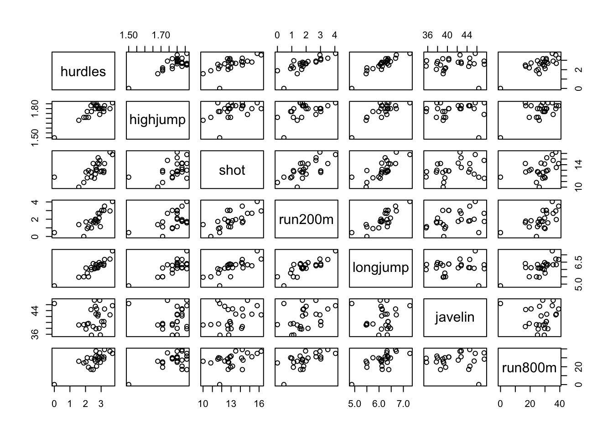
Matriz de correlación
round(cor(heptathlon[,-score]),3)## hurdles highjump shot run200m longjump javelin run800m
## hurdles 1.000 0.811 0.651 0.774 0.912 0.008 0.779
## highjump 0.811 1.000 0.441 0.488 0.782 0.002 0.591
## shot 0.651 0.441 1.000 0.683 0.743 0.269 0.420
## run200m 0.774 0.488 0.683 1.000 0.817 0.333 0.617
## longjump 0.912 0.782 0.743 0.817 1.000 0.067 0.700
## javelin 0.008 0.002 0.269 0.333 0.067 1.000 -0.020
## run800m 0.779 0.591 0.420 0.617 0.700 -0.020 1.000La matriz de resultados confirma que la gran mayoría de las correlaciones entre las pruebas son positivas, con una alta correlación entre el salto de longitud y el salto de longitud (longjump) y los 100m vallas (hurdles). A algunos les gusta menos el salto de altura (highjump) y el disparo (shot) y la jabalina (javelin) que tiene una correlación cercana a cero con el resto de las pruebas.
Una posible explicación para este resultado podría ser que el entrenamiento para las otras 6 pruebas no añade mucho a la prueba de jabalina, que es una prueba más técnica.
Puede observarse que existe un valor atípico en casi todas las pruebas que corresponde a un atleta Launa (PNG) de Papúa Nueva Guinea - eliminaremos esta observación para ver si la matriz de correlación es significativamente diferente:
heptathlon <- heptathlon[-which(rownames(heptathlon)=="Launa (PNG)"),]
plot(heptathlon[,-score])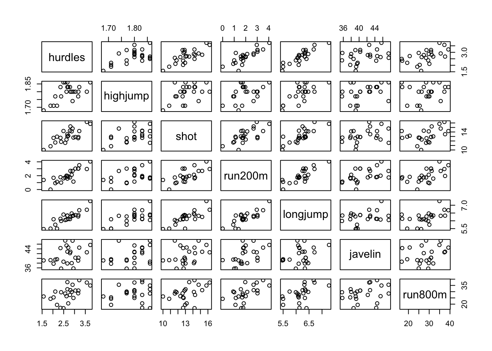
Eliminando al atleta de Papúa Nueva Guinea, las correlaciones cambian sustancialmente y en el diagrama de dispersión matricial no se observan valores extremos.
round(cor(heptathlon[,-score]),3)## hurdles highjump shot run200m longjump javelin run800m
## hurdles 1.000 0.582 0.767 0.830 0.889 0.332 0.559
## highjump 0.582 1.000 0.465 0.391 0.663 0.348 0.152
## shot 0.767 0.465 1.000 0.669 0.784 0.343 0.408
## run200m 0.830 0.391 0.669 1.000 0.811 0.471 0.573
## longjump 0.889 0.663 0.784 0.811 1.000 0.287 0.523
## javelin 0.332 0.348 0.343 0.471 0.287 1.000 0.256
## run800m 0.559 0.152 0.408 0.573 0.523 0.256 1.000Para realizar el PCA, partiremos de la matriz de correlación, ya que las 7 pruebas se miden en diferentes escalas (metros, segundos). Este procedimiento se denomina PCA normalizado (scale=TRUE en la función prcomp).
?prcomp
heptathlon_pca <- prcomp(heptathlon[,-score],scale=TRUE)
head(heptathlon_pca,5)## $sdev
## [1] 2.0793370 0.9481532 0.9109016 0.6831967 0.5461888 0.3374549 0.2620420
##
## $rotation
## PC1 PC2 PC3 PC4 PC5
## hurdles -0.4503876 0.05772161 -0.1739345 0.04840598 -0.19889364
## highjump -0.3145115 -0.65133162 -0.2088272 -0.55694554 0.07076358
## shot -0.4024884 -0.02202088 -0.1534709 0.54826705 0.67166466
## run200m -0.4270860 0.18502783 0.1301287 0.23095946 -0.61781764
## longjump -0.4509639 -0.02492486 -0.2697589 -0.01468275 -0.12151793
## javelin -0.2423079 -0.32572229 0.8806995 0.06024757 0.07874396
## run800m -0.3029068 0.65650503 0.1930020 -0.57418128 0.31880178
## PC6 PC7
## hurdles 0.84665086 -0.06961672
## highjump -0.09007544 0.33155910
## shot -0.09886359 0.22904298
## run200m -0.33279359 0.46971934
## longjump -0.38294411 -0.74940781
## javelin 0.07193437 -0.21108138
## run800m -0.05217664 0.07718616
##
## $center
## hurdles highjump shot run200m longjump javelin run800m
## 2.687500 1.793750 13.173333 2.023750 6.205417 41.278333 28.516667
##
## $scale
## hurdles highjump shot run200m longjump javelin
## 0.51456398 0.05232112 1.49714995 0.93676972 0.40165938 3.46870690
## run800m
## 6.14724800
##
## $x
## PC1 PC2 PC3 PC4
## Joyner-Kersee (USA) -4.757530189 -0.13986143 -0.006040526 0.293416339
## John (GDR) -3.147943402 0.94859029 -0.243919842 0.549171385
## Behmer (GDR) -2.926184760 0.69534239 0.622293440 -0.554744912
## Sablovskaite (URS) -1.288135516 0.17900713 0.250632380 0.637174187
## Choubenkova (URS) -1.503450994 0.96177329 1.780588549 0.784035325
## Schulz (GDR) -0.958467101 0.35121643 0.413086366 -1.113546938
## Fleming (AUS) -0.953445060 0.49982537 -0.265135015 -0.140202490
## Greiner (USA) -0.633239267 0.37592917 -1.140338594 0.142558348
## Lajbnerova (CZE) -0.381571974 -0.71213459 -0.068395353 0.087212735
## Bouraga (URS) -0.522322004 0.77688861 -0.481071429 0.283745698
## Wijnsma (HOL) -0.217701500 -0.23369645 -1.154221444 -1.260128609
## Dimitrova (BUL) -1.075984276 0.51552998 -0.312458252 -0.127032432
## Scheider (SWI) 0.003014986 -1.44688825 1.582739069 -1.254415325
## Braun (FRG) 0.109183759 -1.63595645 0.469577294 0.362580442
## Ruotsalainen (FIN) 0.208868056 -0.68866173 1.152140223 -0.112914470
## Yuping (CHN) 0.232507119 -1.95999641 -1.541230813 0.598325122
## Hagger (GB) 0.659520046 -0.08775813 -1.796509771 -0.182375000
## Brown (USA) 0.756854602 -2.04292201 0.451506018 0.476926314
## Mulliner (GB) 1.880932819 0.91530324 -0.359311801 0.799619094
## Hautenauve (BEL) 1.828170404 0.72629699 -1.048640439 -0.711793161
## Kytola (FIN) 2.118203163 0.39921397 0.190158154 -0.788445056
## Geremias (BRA) 2.770706272 0.03463584 0.170274969 1.385562494
## Hui-Ing (TAI) 3.901166920 1.20175472 0.943677497 -0.002429122
## Jeong-Mi (KOR) 3.896847898 0.36656804 0.390599321 -0.152299968
## PC5 PC6 PC7
## Joyner-Kersee (USA) -0.36183307 -0.27050283 -0.47587527
## John (GDR) 0.75364464 0.37770017 -0.05172711
## Behmer (GDR) -0.19035037 -0.25780287 0.11054960
## Sablovskaite (URS) 0.60362153 -0.21575716 0.53075152
## Choubenkova (URS) 0.58969949 0.08014332 -0.30081842
## Schulz (GDR) 0.71483887 -0.25436956 0.03838796
## Fleming (AUS) -0.86581530 0.03691813 0.23005943
## Greiner (USA) 0.20807431 -0.14236240 -0.06374657
## Lajbnerova (CZE) 0.67727618 0.25014881 0.35555639
## Bouraga (URS) -1.18784299 0.39881271 0.19712215
## Wijnsma (HOL) 0.37497195 -0.20267731 0.17459647
## Dimitrova (BUL) -0.91992929 0.26727067 0.21111846
## Scheider (SWI) -0.20526249 0.17597425 -0.03915701
## Braun (FRG) -0.14712208 0.26134199 -0.01334416
## Ruotsalainen (FIN) -0.31539746 0.18351622 -0.14127555
## Yuping (CHN) 0.17451428 -0.50175724 0.04999374
## Hagger (GB) -0.05104049 0.55058471 -0.46388534
## Brown (USA) -0.38154294 -0.26606429 -0.11099445
## Mulliner (GB) -0.06942955 -0.73259727 -0.31281502
## Hautenauve (BEL) 0.14092347 0.06933542 -0.07548638
## Kytola (FIN) 0.41815113 -0.03363651 0.12143219
## Geremias (BRA) 0.28541366 0.38083979 0.34574480
## Hui-Ing (TAI) -0.67080776 -0.52756760 0.09436975
## Jeong-Mi (KOR) 0.42524426 0.37250885 -0.41055719a1 <- heptathlon_pca$rotation[,1]summary
summary(heptathlon_pca)## Importance of components:
## PC1 PC2 PC3 PC4 PC5 PC6
## Standard deviation 2.0793 0.9482 0.9109 0.68320 0.54619 0.33745
## Proportion of Variance 0.6177 0.1284 0.1185 0.06668 0.04262 0.01627
## Cumulative Proportion 0.6177 0.7461 0.8646 0.93131 0.97392 0.99019
## PC7
## Standard deviation 0.26204
## Proportion of Variance 0.00981
## Cumulative Proportion 1.00000Comprobamos la variabilidad explicada:
head(heptathlon_pca$x)## PC1 PC2 PC3 PC4
## Joyner-Kersee (USA) -4.7575302 -0.1398614 -0.006040526 0.2934163
## John (GDR) -3.1479434 0.9485903 -0.243919842 0.5491714
## Behmer (GDR) -2.9261848 0.6953424 0.622293440 -0.5547449
## Sablovskaite (URS) -1.2881355 0.1790071 0.250632380 0.6371742
## Choubenkova (URS) -1.5034510 0.9617733 1.780588549 0.7840353
## Schulz (GDR) -0.9584671 0.3512164 0.413086366 -1.1135469
## PC5 PC6 PC7
## Joyner-Kersee (USA) -0.3618331 -0.27050283 -0.47587527
## John (GDR) 0.7536446 0.37770017 -0.05172711
## Behmer (GDR) -0.1903504 -0.25780287 0.11054960
## Sablovskaite (URS) 0.6036215 -0.21575716 0.53075152
## Choubenkova (URS) 0.5896995 0.08014332 -0.30081842
## Schulz (GDR) 0.7148389 -0.25436956 0.03838796Gráficamente, se observa que el primer componente importante es el más dominante.
plot(heptathlon_pca)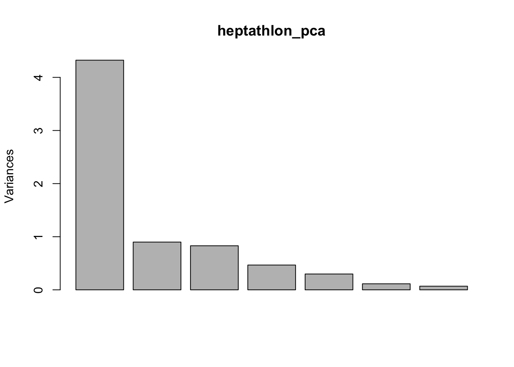 El biplot es una representación gráfica de datos multivariantes. Así como una gráfica de dispersión muestra la distribución combinada de dos variables, una biplot representa tres o más variables.
Si ordenamos de mayor a menor la variable ``puntuación’’ tenemos las tres medallas de oro, plata y bronce.
head(heptathlon[order(heptathlon$score,decreasing = TRUE),],3)## hurdles highjump shot run200m longjump javelin
## Joyner-Kersee (USA) 3.73 1.86 15.80 4.05 7.27 45.66
## John (GDR) 3.57 1.80 16.23 2.96 6.71 42.56
## Behmer (GDR) 3.22 1.83 14.20 3.51 6.68 44.54
## run800m score
## Joyner-Kersee (USA) 34.92 7291
## John (GDR) 37.31 6897
## Behmer (GDR) 39.23 6858
El biplot, nos muestra los atletas proyectados en sus dos primeros componentes principales, pero también las flechas nos dan información sobre las varianzas y covarianzas de las variables (direcciones de máxima variabilidad).
biplot(heptathlon_pca)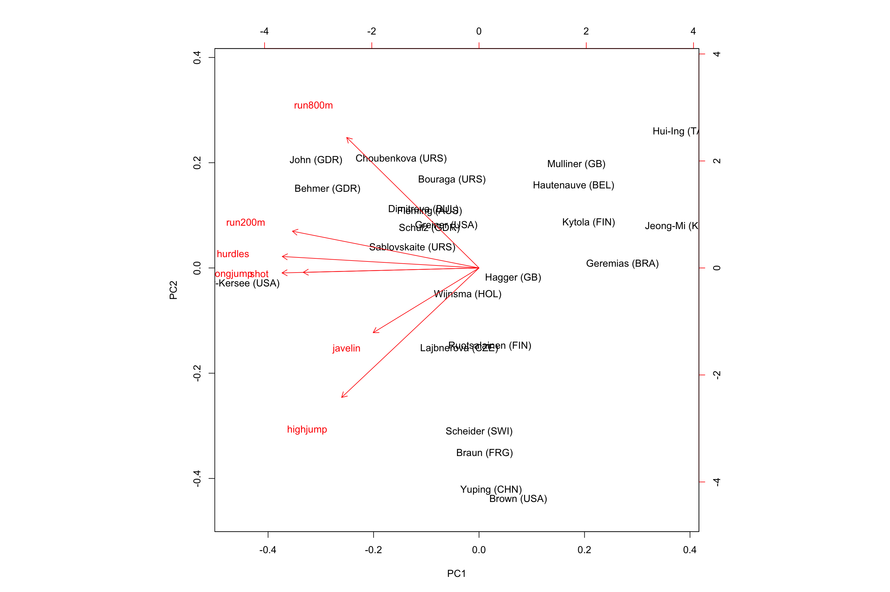
Por ejemplo, el ganador Joyner-Kersee (USA) acumula puntuaciones más altas en el longjump,hurdlesp y run200m.
Podemos analizar la correlación entre la puntuación de la variable y PC1. Esto indica que la correlación es muy negativa y muy fuerte con el score.
cor(heptathlon$score, heptathlon_pca$x[,1])## [1] -0.9931168plot(heptathlon$score, heptathlon_pca$x[,1])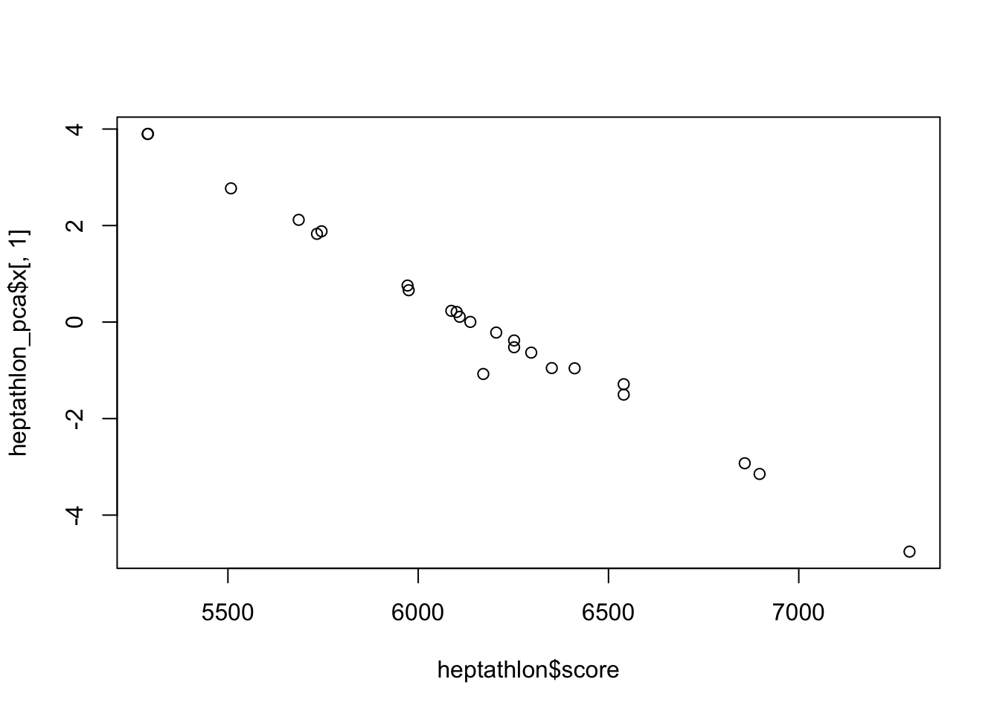
objeto prcomp
class(heptathlon_pca)## [1] "prcomp"Podemos usar predict, ej.:
new.athlete <- as.data.frame(t(as.vector(c(3.5,2,13,5,7,41,33))))
colnames(new.athlete) <- c("hurdles","highjump",
"shot","run200m","longjump",
"javelin","run800m")
rownames(new.athlete) <- "Mrs XYZ (XXX)"
pp<-predict(heptathlon_pca,newdata = new.athlete)
pp## PC1 PC2 PC3 PC4 PC5 PC6
## Mrs XYZ (XXX) -4.354879 -1.430366 -1.130194 -1.901377 -2.089963 -0.8654821
## PC7
## Mrs XYZ (XXX) 1.253643biplot(heptathlon_pca)
text(pp[,1],pp[,2],"Mrs XYZ (XXX)",col="blue",cex=.65)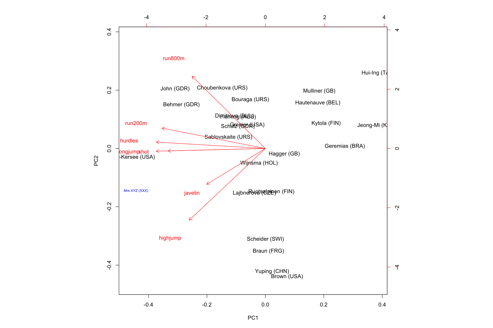
9.2 Análisis Discriminante Lineal
El análisis discriminante lineal (LDA - linear discriminant analysis) y el discriminante lineal relacionado de Fisher son métodos utilizados en la estadística, el reconocimiento de patrones y el aprendizaje automático para encontrar una combinación lineal de características que caracteriza o separa dos o más clases de objetos o eventos. La combinación resultante puede utilizarse como clasificador lineal o, más comúnmente, para la reducción de la dimensionalidad antes de su posterior clasificación.
Es un método alternativo más adecuado a la regresión logística cuando la variable cualitativa tiene más de dos niveles (\(K \geq 2\)). Supone también un modelo más estable cuando el tamaño muestral \(n\) es pequeño y la distribución de los predictores es aproximadamente normal en cada una de sus clases. El propósito del LDA es encontrar la combinación lineal de las variables originales que permita la mejor separación entre grupos de un set de datos. El LDA está basado en el clasificador Bayesiano.
Ilustración
library(ggplot2)
ggplot(data = data.frame(x = -4:4), aes(x = x)) +
# distribución de densidad de k = 1
stat_function(fun = dnorm,
args = list(mean = -1.25, sd = 1),
color = "green3") +
# distribución de densidad de k = 2
stat_function(fun = dnorm,
args = list(mean = 1.25, sd = 1),
color = "firebrick") + # límite de decisión de Bayes
geom_vline(xintercept = 0,
linetype = "longdash") +
theme_bw()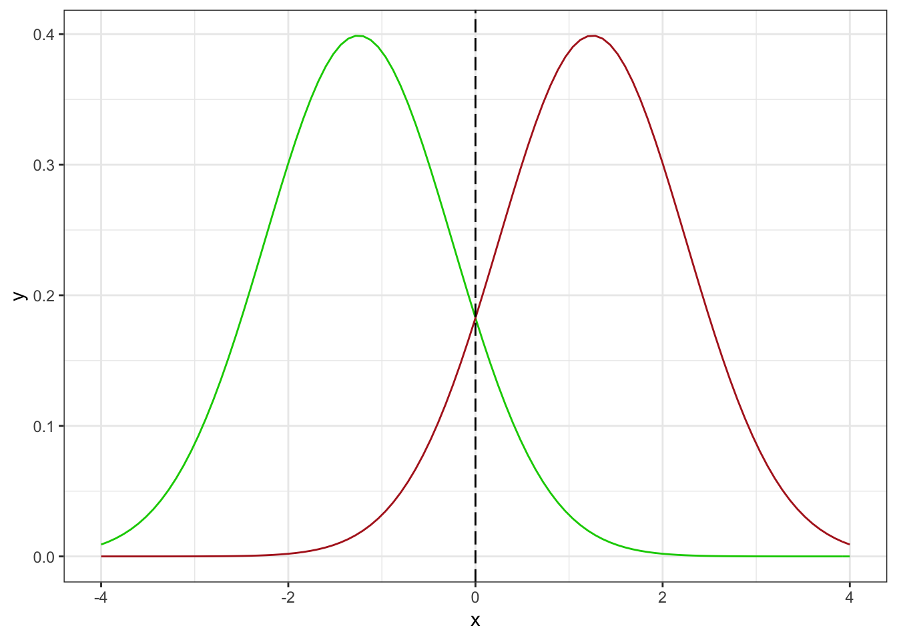
En este caso, el clasificador de Bayes asignará la observación a la clase \(k = 1\) (verde) si \(x < 0\), y a la clase \(k = 2\) (rojo) si \(x > 0\).
9.2.1 Ejemplo:
Vamos a predecir si el rendimiento del combustible (gas mileage) de un automóvil es alto o bajo en función del resto de predictores del set de datos.
library(ISLR)
head(Auto, 3)## mpg cylinders displacement horsepower weight acceleration year origin
## 1 18 8 307 130 3504 12.0 70 1
## 2 15 8 350 165 3693 11.5 70 1
## 3 18 8 318 150 3436 11.0 70 1
## name
## 1 chevrolet chevelle malibu
## 2 buick skylark 320
## 3 plymouth satellite?Auto
attach(Auto) # Vector de “0”s (rendimiento bajo) con la misma longitud que la variable mpg ## The following object is masked from package:ggplot2:
##
## mpgmpg01 <- rep(0, length(mpg))
# Sustitución de “0”s por “1”s (rendimiento alto) si mpg > mediana(mpg)
mpg01[mpg > median(mpg)] <- 1
Auto <- data.frame(Auto, mpg01)# Correlación entre variables (excluyendo la variable cualitativa “name”)
cor(Auto[, -9], method = "pearson")## mpg cylinders displacement horsepower weight
## mpg 1.0000000 -0.7776175 -0.8051269 -0.7784268 -0.8322442
## cylinders -0.7776175 1.0000000 0.9508233 0.8429834 0.8975273
## displacement -0.8051269 0.9508233 1.0000000 0.8972570 0.9329944
## horsepower -0.7784268 0.8429834 0.8972570 1.0000000 0.8645377
## weight -0.8322442 0.8975273 0.9329944 0.8645377 1.0000000
## acceleration 0.4233285 -0.5046834 -0.5438005 -0.6891955 -0.4168392
## year 0.5805410 -0.3456474 -0.3698552 -0.4163615 -0.3091199
## origin 0.5652088 -0.5689316 -0.6145351 -0.4551715 -0.5850054
## mpg01 0.8369392 -0.7591939 -0.7534766 -0.6670526 -0.7577566
## acceleration year origin mpg01
## mpg 0.4233285 0.5805410 0.5652088 0.8369392
## cylinders -0.5046834 -0.3456474 -0.5689316 -0.7591939
## displacement -0.5438005 -0.3698552 -0.6145351 -0.7534766
## horsepower -0.6891955 -0.4163615 -0.4551715 -0.6670526
## weight -0.4168392 -0.3091199 -0.5850054 -0.7577566
## acceleration 1.0000000 0.2903161 0.2127458 0.3468215
## year 0.2903161 1.0000000 0.1815277 0.4299042
## origin 0.2127458 0.1815277 1.0000000 0.5136984
## mpg01 0.3468215 0.4299042 0.5136984 1.0000000par(mfrow=c(2,3))
boxplot(cylinders ~ mpg01, data = Auto, main = "Cylinders vs mpg01")
boxplot(displacement ~ mpg01, data = Auto, main = "Displacement vs mpg01")
boxplot(horsepower ~ mpg01, data = Auto, main = "Horsepower vs mpg01")
boxplot(weight ~ mpg01, data = Auto, main = "Weight vs mpg01")
boxplot(acceleration ~ mpg01, data = Auto, main = "Acceleration vs mpg01")
boxplot(year ~ mpg01, data = Auto, main = "Year vs mpg01")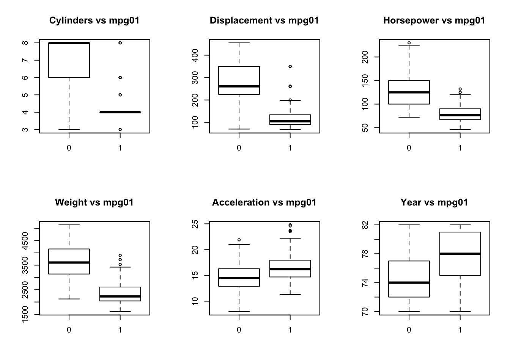
Representación de distribución en histogramas:
library(ggplot2)
library(gridExtra)
p1 <- ggplot(data = Auto, aes(x = displacement)) + geom_histogram(position = "identity",
alpha = 0.5,
aes(fill = as.factor(mpg01)))+ labs(fill = "mpg01")
p2 <- ggplot(data = Auto, aes(x = horsepower)) + geom_histogram(position = "identity",
alpha = 0.5,
aes(fill = as.factor(mpg01)))+ labs(fill = "mpg01")
p3 <- ggplot(data = Auto, aes(x = weight)) + geom_histogram(position = "identity",
alpha = 0.5,
aes(fill = as.factor(mpg01)))+ labs(fill = "mpg01")
grid.arrange(p1, p2, p3)## `stat_bin()` using `bins = 30`. Pick better value with `binwidth`.
## `stat_bin()` using `bins = 30`. Pick better value with `binwidth`.
## `stat_bin()` using `bins = 30`. Pick better value with `binwidth`.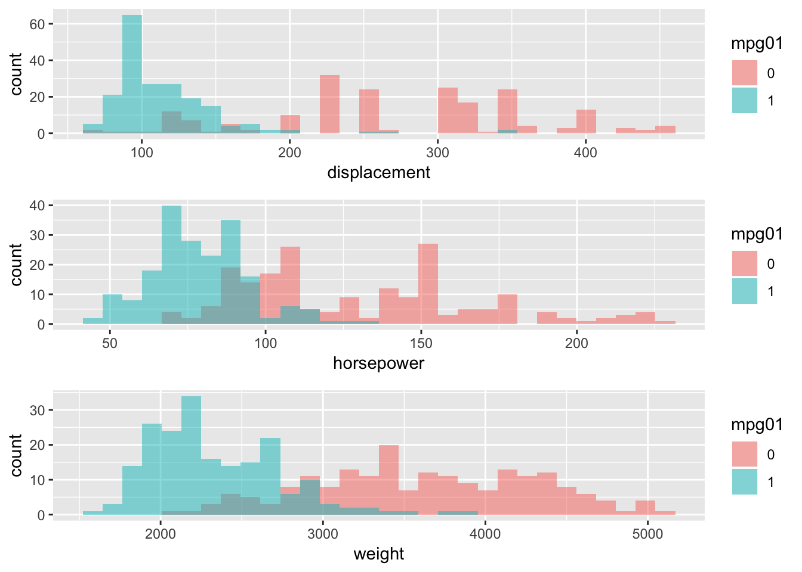
Cálculo de la función discriminante
Primero dividiremos el set de datos en entrenamiento (80%) para ajustar el modelo, y en test (20%) para evaluarlo.
set.seed(1)
entrenamiento <- sample(x = nrow(Auto), size = nrow(Auto)*0.8, replace = FALSE) # Subgrupo de datos de entrenamiento
Auto.train <- Auto[entrenamiento,]
# Subgrupo de datos de test
Auto.test <- Auto[-entrenamiento,]Función lda en la librería MASS:
library(MASS)
# Modelo LDA con los datos de entrenamiento
modelo.lda <- lda(formula = mpg01 ~ cylinders + displacement + horsepower + weight , data = Auto.train)
modelo.lda## Call:
## lda(mpg01 ~ cylinders + displacement + horsepower + weight, data = Auto.train)
##
## Prior probabilities of groups:
## 0 1
## 0.514377 0.485623
##
## Group means:
## cylinders displacement horsepower weight
## 0 6.677019 269.8323 128.71429 3601.379
## 1 4.210526 117.4145 78.57895 2350.526
##
## Coefficients of linear discriminants:
## LD1
## cylinders -0.4183687107
## displacement -0.0017457149
## horsepower 0.0028180950
## weight -0.00092838389.3 K-medias
K-means Clustering es un algoritmo de aprendizaje no supervisado que intenta agrupar datos basados en su similitud. El aprendizaje sin supervisión significa que no hay resultados que predecir, y el algoritmo sólo trata de encontrar patrones en los datos. En k-means clustering, tenemos que especificar el número de clusters en los que queremos que se agrupen los datos. El algoritmo asigna aleatoriamente cada observación a un cúmulo, y encuentra el centroide de cada cúmulo. Luego, el algoritmo itera a través de dos pasos:
Reasigne los puntos de datos al cluster cuyo centroide está más cerca.
Calcular el nuevo centroide de cada cúmulo.
Estos dos pasos se repiten hasta que la variación dentro del conglomerado no pueda reducirse más. La variación dentro del conglomerado se calcula como la suma de la distancia euclídea entre los puntos de datos y sus respectivos centros de conglomerados.
Ejemplo:
library(rattle)## Rattle: A free graphical interface for data science with R.
## Version 5.2.0 Copyright (c) 2006-2018 Togaware Pty Ltd.
## Type 'rattle()' to shake, rattle, and roll your data.data(wine)
head(wine)## Type Alcohol Malic Ash Alcalinity Magnesium Phenols Flavanoids
## 1 1 14.23 1.71 2.43 15.6 127 2.80 3.06
## 2 1 13.20 1.78 2.14 11.2 100 2.65 2.76
## 3 1 13.16 2.36 2.67 18.6 101 2.80 3.24
## 4 1 14.37 1.95 2.50 16.8 113 3.85 3.49
## 5 1 13.24 2.59 2.87 21.0 118 2.80 2.69
## 6 1 14.20 1.76 2.45 15.2 112 3.27 3.39
## Nonflavanoids Proanthocyanins Color Hue Dilution Proline
## 1 0.28 2.29 5.64 1.04 3.92 1065
## 2 0.26 1.28 4.38 1.05 3.40 1050
## 3 0.30 2.81 5.68 1.03 3.17 1185
## 4 0.24 2.18 7.80 0.86 3.45 1480
## 5 0.39 1.82 4.32 1.04 2.93 735
## 6 0.34 1.97 6.75 1.05 2.85 1450Siempre se recomienda estandarizar las variables
wine.stand <- scale(wine[-1]) # To standarize the variables
# K-Means
k.means.fit <- kmeans(wine.stand, 3) # k = 3
attributes(k.means.fit)## $names
## [1] "cluster" "centers" "totss" "withinss"
## [5] "tot.withinss" "betweenss" "size" "iter"
## [9] "ifault"
##
## $class
## [1] "kmeans"Una pregunta fundamental es cómo determinar el valor del parámetro \(k\). Si consideramos el porcentaje de varianza explicado en función del número de grupos:
Uno debe elegir un número de grupos para que la incorporación de otro grupo no dé un mejor modelado de los datos. Más precisamente, si el porcentaje de varianza explicado por los clusters se traza de acuerdo al número de grupos, los primeros clusters añadirán mucha información (explican mucha varianza), pero en algún momento la ganancia marginal disminuirá, dando un ángulo en el gráfico. En este punto se elige el número de racimos, de ahí el “criterio del codo”.
wssplot <- function(data, nc=15, seed=1234){
wss <- (nrow(data)-1)*sum(apply(data,2,var))
for (i in 2:nc){
set.seed(seed)
wss[i] <- sum(kmeans(data, centers=i)$withinss)}
plot(1:nc, wss, type="b", xlab="Number of Clusters",
ylab="Within groups sum of squares")}
wssplot(wine.stand, nc=6)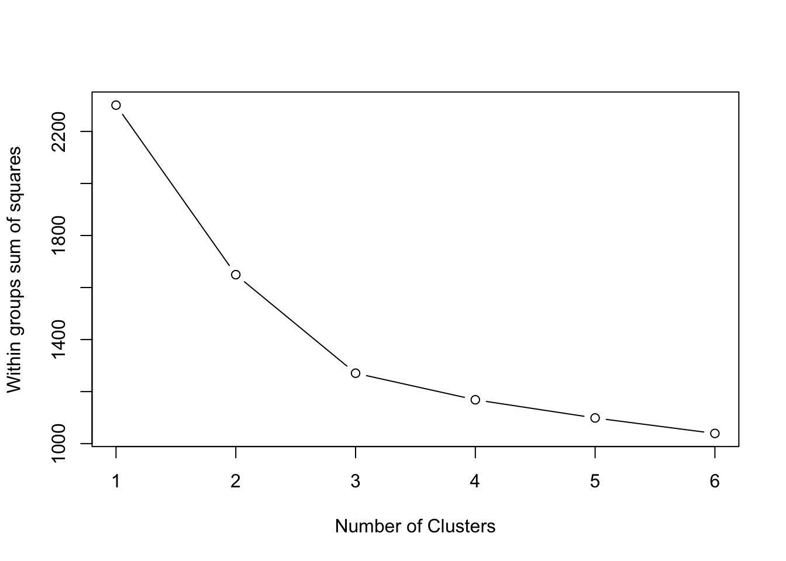
La library(cluster) permite representar los datos en dos dimensiones:
library(cluster)
clusplot(wine.stand, k.means.fit$cluster,
main='2D representation of the Cluster solution',
color=TRUE, shade=TRUE,
labels=2, lines=0)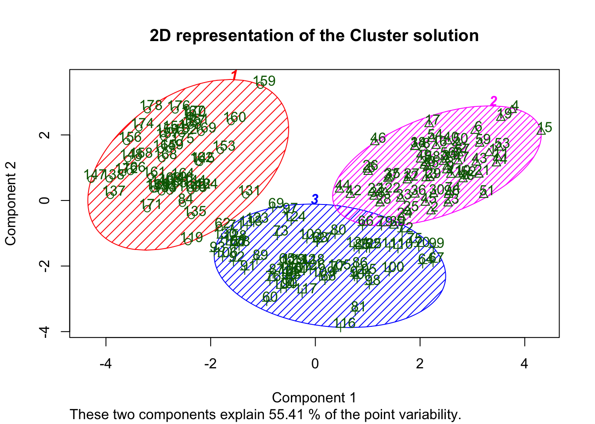
Sabiendo que hay tres tipos de wine$Type wines, podemos calcular la matriz de confusión.
table(wine$Type)##
## 1 2 3
## 59 71 48table(wine[,1],k.means.fit$cluster)##
## 1 2 3
## 1 0 59 0
## 2 3 3 65
## 3 48 0 09.4 Cluster jerárquico
Los métodos jerárquicos utilizan una matriz de distancia como entrada para el algoritmo de agrupación. La elección de una métrica apropiada influirá en la forma de los cúmulos, ya que algunos elementos pueden estar próximos entre sí de acuerdo a una distancia y más separados de acuerdo a otra.
d <- dist(wine.stand, method = "euclidean") # Euclidean distance matrix.El criterio de desviación mínima de Ward minimiza la desviación total dentro del grupo de empresas.
H.fit <- hclust(d, method="ward")## The "ward" method has been renamed to "ward.D"; note new "ward.D2"class(H.fit)## [1] "hclust"La opción plot devuelve un hclust que muestra el dendograma:
plot(H.fit) # display dendogram
groups <- cutree(H.fit, k=3) # cut tree into 5 clusters
# draw dendogram with red borders around the 5 clusters
rect.hclust(H.fit, k=3, border="red")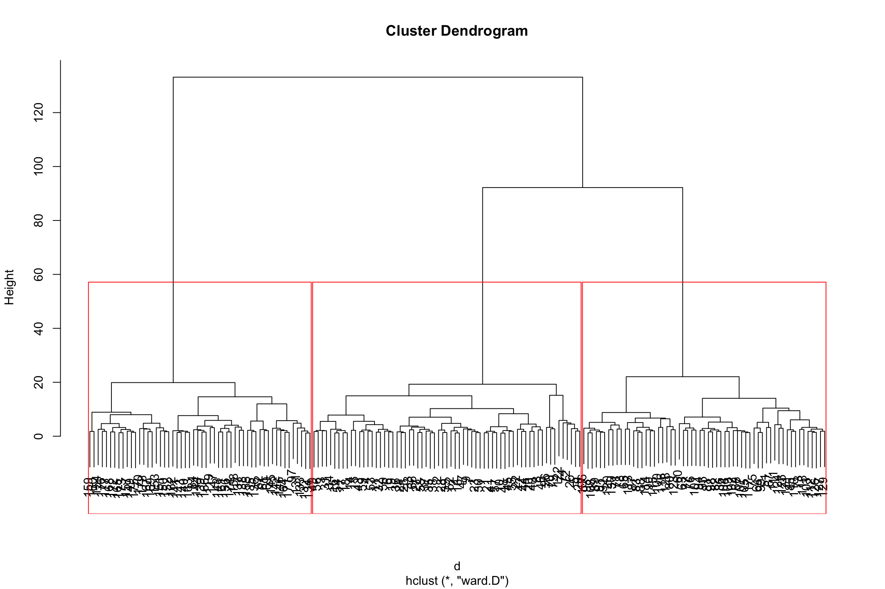
table(wine[,1],groups)## groups
## 1 2 3
## 1 58 1 0
## 2 7 58 6
## 3 0 0 48